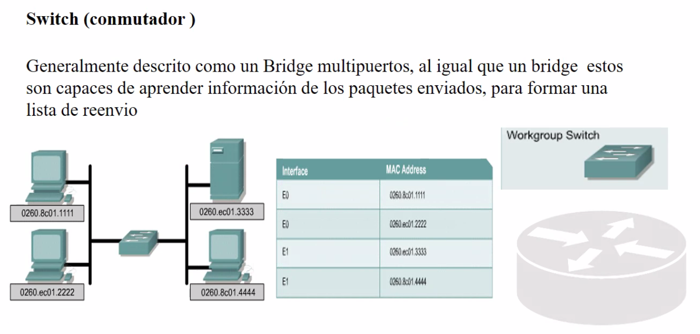

Es un bridge multipuertos.

Switch no tiene solo 4 puertos. Puede llegar a tener hasta 96 puertos (todo a traves del mismo equipo).

Aumentar virtualmente la comunicacion de la velocidad para tener varios switch en paralelo,
virtualmente: Se pueden hablar diferentes puertos en paralelo.
Se maneja un mayor ancho de banda.
El switch entiende la direccion mac pero con el proposito de ser identificado en la red para administrarlo, pero esas cosas no mandan mensajes. Entonces no necesitan una direccion mac.